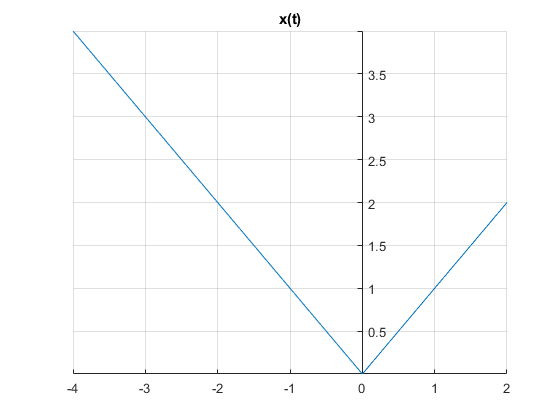

Practica 3 Señales en tiempo continuo
Integrantes:
- Irvin Joshep Camacho Dominguez
- Solano Castrejón Eric
Contents
Objetivos
- Manipulación básica de MATLAB
- Gráficas de señales reales y complejas continuas
- Transformación de señales continuas (escalamientos y traslaciones)
- Calculo de energía y potencia de señales continuas
Introduccion
Es un sistema de cómputo numérico que ofrece un entorno de desarrollo integrado (IDE) con un lenguaje de programación propio (lenguaje M). Está disponible para las plataformas Unix, Windows, Mac OS X y GNU/Linux.
Historia
En 1984 surge la primera versión, creado por Cleve Moler, con la idea de usar paquetes de subrutinas escritas en Fortran en los cursos de Análisis Numérico y Algebra Lineal, sin tener una necesidad de programas que usaran este lenguaje. El lenguaje de programación M se creó en 1970 proporcionando un acceso sencillo al Software de matrices LINPACK y EISPACK sin tener que hacer uso del lenguaje Fortran. Ya en 2004 se apreciaba que MATLAB era usado por aproximadamente más de un millón de personas, tanto académicos como empresarios.
Alternativas de Software Libre
- Octave
La sintaxis de Octave es ampliamente compatible con Matlab. El intérprete de Octave puede ejecutarse en modo GUI, como consola, o invocarse como parte de un script de shell. Se pueden encontrar más ejemplos de Octave en la wiki .
link de descarga: https://www.gnu.org/software/octave/
- Phyton
La integración bidireccional entre MATLAB y Python permite lo siguiente: * Llamada a MATLAB desde Python * Llamada a librerías escritas en Python desde MATLAB * Empaquetado de programas de MATLAB para el despliegue escalable con Python
Link de descarga: https://www.python.org/downloads/
Desarrollo
Problema 1
Crea una función que se llame fun1 y reciba dos parametros y la función debe regresar la evaluación , esta función debe trabajar con y . Debe mostrar su código en el reporte (sin ejecutar).
function [f] = fun1(w,a)
f=a./(a.^2+w.^2);
end
Problema2
Construya una función que gráfique funciones de en el formato de su elección y pruebe su código mostrando la gráfica de vs en el intervalo ![$[-2,2]$](SySPrac3JoshepCamacho_eq01169792831847459841.png) para , no debe incluir el código, solo el uso de la función para mostrar la gráfica.
para , no debe incluir el código, solo el uso de la función para mostrar la gráfica.
a=1; w=(-2:0.01:2); fun2 = @(a,w)a./(a.^2+w.^2); FuncionImprimir(w,fun2(a,w))

Problema 4
Realiza las mismas operaciones que Lathi en las secciones M1.1 a M1.4 que se encuentra al final del capítulo 1 y antes de la sección de problemas, cambie los inline por funciones anonimas M1.1
f = @(t) exp(-t).*cos(2*pi*t); t = (-2:2); plot(t,f(t)); xlabel('t'); ylabel('f(t)'); grid;
No ilustra el comportamiento oscilatorio esperado. Se requieren más puntos para representar adecuadamente f (t).
t=(-2:0.01:2); plot(t,f(t)); xlabel('t'); ylabel('f(t)'); grid;

M1.2
u = @(t) (t>=0); t=(-2:2); plot(t,u(t)); xlabel('t'); ylabel('f(t)'); grid;

El argumento del vector de cuatro elementos del eje especifica el eje x mínimo, el eje x máximo, el eje y mínimo y el eje y máximo, respectivamente.
t = (-2:0.01:2); plot (t,u(t)); xlabel('t'); ylabel('u(t)'); axis ([-2 2 -0.1 1.1]);

p = @(t) (t>=0) & (t<1); t = (-1:0.01:2); plot (t,p(t)); xlabel('t'); ylabel('p(t)=u(t)-u(t-1)'); axis ([-1 2 -0.1 1.1]);
M1.3
g = @(t) exp(-t).*cos(2*pi*t).*(t>=0); t = (-2:0.01:2); plot(t,g(2*t+1)); xlabel('t'); ylabel('g(2t+1)'); grid;
Luego, considere trazar g (?t + 1) sobre (?2 ? t ? 2). Como a la forma de onda se reflejará. Agregando la condición b 0, la forma de onda final se desplaza hacia la derecha
plot(t,g(-t+1)); xlabel('t'); ylabel('g(-t+1)'); grid;
Hasta este punto, las figuras se pueden dibujar razonablemente a mano. Considere trazar la función más complicada h (t) = g (2t + 1) + g (?t + 1) sobre (?2 ? t ? 2) (Fig. M1.8). En este caso, un boceto a mano preciso es bastante difícil. Con MATLAB, el trabajo es mucho menos pesado.
plot(t,g(2*t+1)+g(-t+1)); xlabel('t'); ylabel('h(t)'); grid;
M1.4 Integración numérica y estimación de energía de señal
x = @(t) (exp(-t).*((t>=0)&(t<1)));
% Dejando a $\Delta t = 0.01$
t = (0:0.01:1);
E_x =sum(x(t).*x(t)*0.01);
disp(E_x);
0.4367
x_squared = @(t) (exp(-2*t).*((t>=0)&(t>1))); E_x = quad(x_squared,0,1); g_square = @(t) (exp(-2*t).*(cos(2*pi*t).*2).*(t>=0)); t = (0:0.001:100); E_g = sum(g_square(t)*0.001); E_g = quad(g_square, 0,100); disp(E_g);
0.0920
Problema 5
Resuelve el problema 1.2.2 usando las herramientas del paso anterior.
f1 = @(t) (-t).*((t>=-4)&(t<0))+ (t).*((t>=0)); t=(-4:1:2); plot(t,f1(t)); grid on ax = gca; ax.XAxisLocation = 'origin'; ax.YAxisLocation = 'origin'; ax.Box = 'off'; title('x(t)');
a) x(t-4)
f1 = @(t) (-t+4).*((t>=0)&(t<4))+ (t-4).*((t>=4));
t=(0:1:6);
plot(t,f1(t));
title('x(t-4)');
grid;
f1 = @(t) (-t*3/2).*((t>=-6)&(t<0))+ (t*3/2).*((t>=3));
t=(0:1:6);
plot(t,f1(t));
title('x(t-4)');
grid;
Problema 7
Escriba una función que se llame potencia que reciba como argumento una función (anonima o simbolica) y que regrese el calculo de la potencia para esto puede resultar útil investigar las instrucciones int , integral Se presupone utilizar el código solo con funciones de potencia. Muestre el código sin ejecutar, y posteriormente resuelva el problema 1.1.4 syms t; f = funcion; T = periodoS; potencia = @(f) 1/T*int(f.^2,a,(-T/2),(T/2)); potencia(f); fprintf('%f',potencia(f)); a = (-2:.01:2); x = @(a) ((a.^3).*((a>=-2)&(t<=2))); x(a); plot(t,x(a)); xlabel('t'); ylabel('f(t)'); grid on;
% fprintf('%f',potencia(f)); syms x funo = x.^3; potencia = @(funo) (1/4)*int(funo.^2,x,(-4/2),(4/2)); VP = potencia(funo); fprintf('%f',VP); fprintf('\n'); vrms = sqrt(VP); fprintf('%f',vrms);
9.142857 3.023716
a) -x(t)
syms x funo = x.^3; funmodi = -(funo) potencia = @(funmodi) (1/4)*int(funmodi.^2,x,(-4/2),(4/2)); VP = potencia(funmodi); fprintf('%f',VP); fprintf('\n'); vrms = sqrt(VP); fprintf('%f',vrms);
funmodi = -x^3 9.142857 3.023716
b) 2x(t)
syms x funo = x.^3; funmodi = 2.*(funo); potencia = @(funmodi) (1/4)*int(funmodi.^2,x,(-4/2),(4/2)); VP = potencia(funmodi); fprintf('%f',VP); fprintf('\n'); vrms = sqrt(VP); fprintf('%f',vrms);
36.571429 6.047432
c) cx(t)
syms x c funo = x.^3; funmodi = c.*(funo); potencia = @(funmodi) (1/4)*int(funmodi.^2,x,(-4/2),(4/2)); VP = potencia(funmodi); fprintf('%s',VP); fprintf('\n'); vrms = sqrt(VP); fprintf('%s',vrms);
(64*c^2)/7 ((64*c^2)/7)^(1/2)